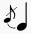
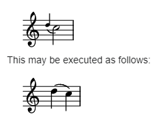
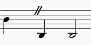
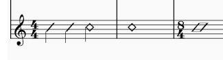
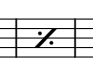
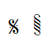
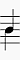
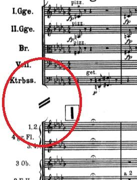

Glossary
Listed below are technicial terms and musical terms, which are frequently used in MuseScore or in the Handbook. Links to relevant handbook chapter are provided. To help musicians who are capable of reading a notation but do not know its proper name, image is provided. This chapter does not aim to be a dictionary of all musical notations, see External links.
The differences between American English and British English are marked with "(AE)" and "(BE)", respectively. Editors and translators of this chapter should add the individual entry for each term.
A
- Acciaccatura

A short grace note which appears as a small note with a stroke through the stem. Musescore creates a quick playback, the playback duration is not affected by duration of the parent note. * Accidental
An accidental is a sign appearing in front of a note that raises or lowers its pitch. See Entering notes and rests:Accidentals. chapter. Musescore creates playback for common accidentals only, they includes sharps, flats, naturals, double sharps, double flats, and triple flats. To create microtonal accidentals such as quarter tone, see Tuning systems, microtonal notation system, and playback Chapter. * Ambitus
Note (or vocal) range used in a staff. Used particularly in early music. See Ambitus chapter. * Anacrusis (mostly BE)
See Pickup measure. * Anchor
The point of attachment to the score of objects such as Text and Lines: When the object is dragged, the anchor appears as small brown circle connected to the object by a dotted line. Depending on the object selected, its anchor may be attached to either (a) a note (e.g. fingering), (b) a staff line (e.g. staff text), or (c) a barline (e.g. repeats). * Appoggiatura
A long grace note which takes value from its associated note. Musescore creates playback as such. It is acceptable to execute written appoggiatura as acciaccatura nowadays but Musescore does not create such playback. Appoggiatura's functions include: passing tone, anticipation, struck suspension, and escape tone.\

- Arpeggio
An arpeggio tells the performer to break up the chord into the constituent notes, playing them separately and one after the other. The arrow arpeggio symbol indicates the direction in which the player should play the notes of the chord. See Arpeggios and glissandi chapter.\

- Articulation
A marking or symbol indicating how a note should be played, usually by altering the length of a note or shaping its attack and decay. See Articulation chapter.
B
- Bar (BE)
See measure. * Barline
Vertical line through a staff, staves, or a full system that separates measures. See Barline chapter. * Beam
Notes with a duration of an eighth or shorter either carry a flag or a beam. Beams are used for grouping notes. See also French Beam. See Beam chapter. * BPM
A tempo displaying unit only used inside Musescore's Play toolbar. BPM is the amount of quarter notes would have been within one minute. It is not the number used in metronome tempo markings on a score. See Playback controls chapter. * Breve, or Brevis
A double whole note or breve is a note that has the duration of two whole notes.
C
- Caesura
A caesura (//) is a brief, silent pause. Time is not counted for this period, and music resumes when the director signals. See Breaths and pauses chapter.\

- Capo (text)
A text to indicate the setting of the transposing device used on an instrument. See Applying capos. Not to be confused with Da capo (D.C.). * Cent
An interval equal to one hundredth of a semitone, used by Tuning property of a note. See Properties panel chapter.
* Chord
* 1. A group of two or more notes sounding together.
* 2. In Musescore, only notes sounding together that have same duration inside one Musescore Voice constitute a chord. To select a chord in MuseScore, press Shift and click on a note. See Working with multiple voices chapter.
* 3. In Musescore, a chord symbol. See Chord symbols chapter.
* Clef
A musical symbol used to indicate which notes are represented by the lines and spaces on a →staff. See Clefs chapter. See also courtesy clef. * Coda
- 1. A passage that brings a piece (or a movement) to an end.
- 2. The navigation marker which resembles a set of crosshairs. It is used where the exit from a repeated section is within that section rather than at the end. See also segno sign. See Jumps and markers chapter. *
```

``` * Concert pitch * 1. The sounding, or real pitch of a note—as opposed to the written pitch. See Working with transposing instruments chapter. * 2. A score viewing mode in Musescore, see Concert pitch box in the status bar chapter. * 3. The frequency of A4. * Courtesy clef
A reduced-size clef applied to the end of a system indicating a clef change at the start of the next system. See Clefs chapter. * Cross-stave notation
- A musical phrase extending across two neighboring staves: e.g. bass stave and treble stave. *
```

```
- To create notation where the two stems are at opposite sides of the beam, as shown above, see Cross-staff notation chapter. *
```

```
- To create notation where the stems are on the same side of the beam, as shown above, see How to span a chord or stem over two staves chapter.
- Crotchet (BE)
See Quarter note.
D
- Da capo (D.C.)
A directive to repeat the previous part of music. See Jumps and markers chapter. Not to be confused with capo (text). * Dead note
See ghost note. * Demisemiquaver (BE)
A thirty-second note. * Double ♭
A double flat (♭♭ or 𝄫) is a sign that indicates that the pitch of a note has to be lowered two semitones. * Double ♯
A double sharp (♯♯ or 𝄪) is a sign that indicates that the pitch of a note has to be raised two semitones. * Duplet
See tuplet. * Dynamic, dynamics, dynamic symbol, dynamics symbol
A symbol indicating the relative loudness of a note or phrase of music—such as mf (mezzoforte), p (piano), f (forte) etc., starting at that note. See Dynamic chapter.
E
- Edit mode, text edit mode
Used to edit adjust literal layout position and content of Text, contrast with normal mode and note input mode. See Adjusting elements directly and Entering and editing text : Editing text object content chapters. * Quaver (eighth note)
A note whose duration is an eighth of a whole note (semibreve). Same as a quaver (BE). * Endecalineo\ *
```

```
- Endecalineo or endecagram, the stave for Solfège. See Solmisation (tutorial for MuseScore 3, pending update)
- Endings
See volta. * Enharmonic notes
Notes that sound the same pitch but are written differently. Example: G♯ and A♭ are enharmonic notes. To quickly switch between enharmonic spellings, press J. See Entering notes and rests chapter.
* Explode\
*
```

```
- A feature that allows the user to split (or explode) the chords in a passage of music in a single staff into their constituent notes or voices. See Implode and explode chapter. See also implode.
F
- Flag
See beam. * Flat
Sign (♭) that indicates that the pitch of a note has to be lowered one semitone, see accidentals and key signature. * French Beam\ *
```

```
- Beams where the stems only extend to the first beam, but don't intersect all the way through. To create use the French Beams plugin.
G
- Ghost note
In music, notably in jazz, a ghost note (or a dead, muted, silenced or false note) is a musical note with a rhythmic value, but no discernible pitch when played. Musescore supports crosshead (cross notehead), diamond notehead(the small diamond same as musescore 3), slash/diamond notehead (new in musescore 4), and adding brackets (parentheses) to a note, see Noteheads chapter.\

\

- Grace note
Grace notes appear as small notes in front of a normal-sized main note. See acciaccatura and appoggiatura. See Grace note chapter. *
* Grand Staff(AE)
* Great Stave (BE)
An [instrument](glossary.md#instrument) with two or more staves, featuring treble and bass clefs, used to notate music for keyboard instruments and the harp, in MuseScore: Any number of Staves connected by a curly brace.
H
- Minim (Half note)
A note whose duration is half of a whole note (semibreve). Same as a minim (BE). * Hemidemisemiquaver (BE)
A sixty-fourth note.
I
- Implode\ *
```


```
- A feature allowing the user to combine voices from separate staves onto one staff. See Implode and explode chapter. This is similar to, but not exactly, score reduction (wikipedia). See also explode.
- Interval
The difference in pitch between two notes, expressed in terms of the scale degree (e.g. major second, minor third, perfect fifth etc.). See Degree (Music) (Wikipedia). * Interleaved\ *
```

```
- A term used to describe two interlocking, oppositely-beamed sets of notes. To create, use the voice function and the beam palette. See Interleaved beam directions
- Instrument
- 1. Musescore Instrument, see Setting up your score chapter.
- 2. Real world instrument
- Irregular measure marker\ *
```

```
- A plus sign or minus sign at the top right of a measure indicates that its duration differs from that set by the time signature. See The user interface and Measure properties chapters.
J
- Jump
Jump objects are notations such as "D.S. al Coda", found in the "Repeats & Jumps" palette. See Jumps and markers chapter.
K
- Key Signature
Set of sharps or flats at the beginning of the staves. It gives an idea about the tonality and avoids repeating those signs all along the staff. A key signature with B flat means F major or D minor tonality. See Key Signature chapter.
L
- Legato
Legato is a play style which involves playing the notes in a slurred manner. Legato may be written as text or shown through the use of slurs. * Local time signature

The time signature on a single staff when different from the overall score time signature. See Adding a local time signature for a single staff. * Longa
A longa is a quadruple whole note. *
* Ledger Line(AE)
* Leger Line (BE)
Line(s) that are added with and for notes above or below the staff.
- Line
Musescore Lines, a type of objects capable of attaching (anchoring) to a horizontal continuous range of more than two notes or rests, or vertical collection of notes (chord). See Other lines chapter.
M
- Measure (AE)
A segment of time defined by a given number of beats. Dividing music into measures provides regular reference points to pinpoint locations within a piece of music. Same as bar (BE). * Measure repeat sign
A measure repeat sign looks like a "percentage" symbol having the two circles filled, or a slash with a dot at each side. See Measure and multi-measure repeats chapter.\

- Metronome mark
A kind of tempo marking. See Tempo markings. * Minim (BE)
See Half note. * Multibar rest
See Measure rests and multimeasure rests chapter.\

N
- Natural
A natural (♮) is a sign that cancels a previous alteration on notes of the same pitch, see →accidentals and →key signature. * Normal mode
The operating mode of MuseScore outside note input mode or edit mode: press Esc to enter it. In Normal mode you can navigate through the score, select and move elements, adjust Inspector properties, and alter the pitches of existing notes.
* Note input mode
The program mode used for entering music notation, contrast with normal mode and edit mode. Enter it by pressing N or clicking on the pen icon in the note input toolbar. See Entering notes and rests chapter.
O
- Operating System (OS)
Underlying software that controls and manages the hardware and other software on a computer. Popular OSes are Microsoft Windows, macOS, and GNU/Linux. * Ossia\ *
```

```
- An alternative passage which may be played instead of the original passage (from the Italian for "alternatively", meaning "or be it"). See Ossia chapter.
P
- Part
- 1. Musescore's automatic staff extraction function, see Parts.
- 2. A single melody line in a polyphonic musical composition. MuseScore 4 never uses this definition, but there is a similar feature Voice.
- 3. Instrument(s) or their staves. MuseScore 4.1.1 uses this definition only on the window title and one subheading in "Staff/Part Properties".
- Pickup Measure (mostly AE, also known as an Anacrusis (mostly BE) or Upbeat)
Incomplete first bar of a piece or a section of a piece of music. See Bar duration, Create new score: Anacrusis bar, and Bar properties:Exclude from bar count chapters. May or may not be compensated for at the end of the score or section. * Properties * 1. Settings of an individual object on a score in Musescore, contrast with style (profile). * 2. Musescore's panel, see Properties panel chapter.
Q
- Quadruplet
See tuplet. * Crotchet (quarter note)
A note whose duration is a quarter of a whole note (semibreve). Same as a crotchet (BE). * Quaver (BE)
See eighth note. * Quintuplet
See tuplet.
R
- Respell Pitches
Change accidental used on a note but keep note's pitch. See Entering notes and rests:Accidentals chapter. * Rest
A musical symbol that indicates silence. See Entering notes and rests chapter. * Re-pitch mode
One of the note input modes. Alternative note input methods: Re-pitch mode
S
- Score
- 1. In MuseScore support forums and the MuseScore Handbook, score generally refers to a computer file with the suffix .mscz - and to its visual representation on a computer screen as well as its audio playback.
- 2. In some chapters of the MuseScore Handbook, score means the layout and formatting of "Full score" or one particular Musescore part. See Musescore Part.
- 3. In other contexts (for example the IMSLP score-sharing website at https://imslp.org), a score generally refers either to a PDF file of the sheet music for a specific work or to an actual paper copy of the sheet music.
- Section
In MuseScore, a region of the score between section breaks; also from the start of a score to the first section break, and from the last section break to the end of the score. * Segno

A navigation marker. See Jumps and markers chapter. * Semibreve (BE)
A whole note (AE). It lasts a whole measure in 4/4 time. * Semiquaver (BE)
A sixteenth note. * Semihemidemisemiquaver (Quasihemidemisemiquaver) (BE)
A hundred and twenty eighth note. * Sextuplet
See tuplet. * SF2
A virtual instrument format developed by E-mu Systems and Creative Labs. See SoundFonts. * SF3
An invention of Werner Schweer, the Musescore developer (source). This format supports sound sample compression. See SoundFonts. * Shared note head

A single notehead with two beams—one up, one down. Especially common in guitar music, for example. See Noteheads * Sharp
Sign (♯) that indicates that the pitch of a note has to be raised one semitone , see accidentals and key signature. * Slash (slash chord, slash notehead)
Indicates strum. See Slash chord (Wikipedia). * Slash notation
A form of music notation using slash marks placed on or above/below the staff to indicate the rhythm of an accompaniment: often found in association with chord symbols. There are two types: (1) Slash notation consists of a rhythm slash on each beat: the exact interpretation is left to the player (see Fill with slashes); (2) Rhythmic slash notation indicates the precise rhythm for the accompaniment (see Toggle rhythmic slash notation). * Slur
A curved line over or under two or more notes, meaning that the notes will be played smooth and connected (legato). See Slur chapter. A slur is not a tie. * Solmisation
see Endecalineo * SoundFont
A virtual instrument format supported by MuseScore. A SoundFont is a special type of file (extension .sf2, or .sf3 if compressed) containing sound samples of one or more musical instruments. In effect, a virtual synthesizer which acts as a sound source for MIDI files. MuseScore 4 comes with its own native soundfont, MS Basic. See SoundFont chapter. * Spatium (plural: Spatia) / Space / Staff Space / sp. (abbr./unit)
A unit of measurement, see Page layout concepts. * Stave / Staves
A set of lines and spaces, each representing a pitch, on which music is written. In period music notation (before 11th century) the staff may have any number of lines. * Staff Space
See Spatium (above). * Stave / Staves (BE)
See Staff (above). * Step-time input
MuseScore's default note input mode. See Entering notes and rests chapter. * Style
The profile that contains settings in MuseScore, contrast with Properties. See Templates and styles chapter. * System
Set of staves to be read simultaneously in a score. See Page layout concepts chapter.\ See also Operating System (OS). * System divider
Separates systems on the same page. Can be switched on for the score in Format→Style→System, see Formatting chapter. Also available in master palette, see Other symbols chapter.\

T
- Text
A Musescore Text object is an object that contains individual characters that can be entered and removed by using (typing on) a computer keyboard. See Entering and editing text chapter. * Tie
A curved line between two adjacent notes of the same pitch to indicate a single note of combined duration. See Tie chapter. A tie is not a slur.
- Quarter note + Tie + Quarter note = Half note
- Quarter note + Tie + Eighth note = Dotted Quarter note
- Quarter note + Tie + Eighth note + Tie + 16th note = Double Dotted Quarter note
- Transposition
The act of moving the pitches of one or more notes up or down by a constant interval. See Transposition chapter. There may be several reasons for transposing a piece, for example:
- The tune is too low or too high for a singer. In this case the whole orchestra will have to be transposed as well—easily done using MuseScore.
- The part is written for a particular instrument but needs to be played by a different one.
- The score is written for an orchestra and you want to hear what the individual instruments sound like. This requires changing the transposing instrument parts to concert pitch.
- A darker or a more brilliant sound is desired. * Triplet
See tuplet. * Tuplet
A tuplet divides its next higher note value by a number of notes other than given by the time signature. See Tuplet chapter. For example a triplet divides the next higher note value into three parts, rather than two. Tuplets may be: triplets, duplets, quintuplets, and other.
U
- Upbeat
See pickup measure.
V
- Velocity
A property of objects inside Musescore that controls how loudly note(s) are played, see musescore 3 handbook Loudness of a note chapter. Velocity property of notes are edited using Properties panel: Playback tab, see Properties panel chapter. * Voice * 1. In Musescore, voice is a software feature, you can use up to 4 voices per staff, see Working with multiple voices, also see staff. * 2. The musical term "voice" refers to a musical line or part which can have its own rhythm. MuseScore does not have a feature to implement the exact same idea, if the voice feature does not suit your need, try adding separate instruments instead. * Volta
In a repeated section of music, it is common for the last few measures of the section to differ. Markings called voltas are used to indicate how the section is to be ended each time. These markings are often referred to simply as endings. See Volta chapter.
W
- Written pitch
Transposing instruments (such as the clarinet, French horn, trumpet etc.) are notated at a different pitch (and key signature) to how they sound. The notated pitch is called the written pitch. Contrast with concert pitch. See Staff / Part properties chapter.